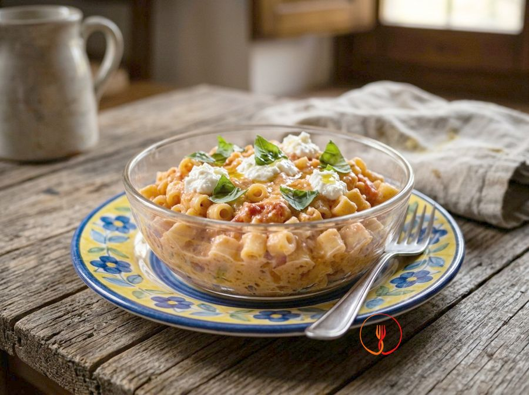

Pasta with tomato and ricotta
A delicate and creamy sauce loved by children.
A classic Italian home-style first course, creamy and delicate thanks to the blend of tomato purée and fresh ricotta. The enveloping texture of the short pasta makes it perfect for a simple yet satisfying everyday meal.
Ingredients
- Short semolina pasta (e.g., ditalini)100 g
- Tomato passata150 ml
- Fresh cow's milk ricotta60 g
- Extra virgin olive oil10 g
- Fresh basil2 leaves
- Salt0 g
Allergens
Gluten, Milk
Method
- Bring a pot with about 1 liter of unsalted water to a boil.
- In a small non-stick pan, pour the tomato passata and the previously washed basil leaves.
- Simmer the tomato sauce over medium-low heat for about 10 minutes, covering with a lid to retain moisture.
- Add the pasta to the boiling water and cook according to the package instructions (about 8-10 minutes), ensuring the texture is soft and safe for the child to chew.
- While the pasta cooks, soften the ricotta in a small bowl with a tablespoon of the pasta cooking water until it reaches a smooth cream consistency.
- Remove the basil leaves from the tomato sauce and turn off the heat.
- Drain the pasta and combine it with the tomato sauce, stirring well with the heat off.
- Fold in the ricotta cream and the raw extra virgin olive oil, mixing gently.
- Ensure the temperature of the dish is lukewarm (around 37°C/98°F) before serving to children.
Tips
- Use a bit of pasta water to dissolve the ricotta and achieve a smooth cream.
- Simmer the tomato sauce with a lid to preserve the fresh basil aroma.
- Choose ridged short pasta to better capture the creamy tomato and ricotta sauce.
Variations
- You can add some grated Parmigiano Reggiano at the end for an extra flavor boost.
- Replace fresh basil with a pinch of dried oregano for a more rustic note.
Nutrition facts (estimate)
| Per serving (165 g) | Per 100 g | |
|---|---|---|
| Energy | 1215 kJ / 289 kcal | 736 kJ / 175 kcal |
| Protein | 10 g | 6.2 g |
| Carbohydrates | 40 g | 24 g |
| of which sugars | 4.1 g | 2.5 g |
| Fat | 9.4 g | 5.7 g |
| of which saturates | 3.2 g | 1.9 g |
| Fibre | 2.8 g | 1.7 g |
| Salt | 0.1 g | 0.06 g |
AI estimates based on average CREA / USDA data: indicative only, not a substitute for medical or dietitian advice.
Open the recipe in the app for the shopping list, ingredient sheets and nearby shops.